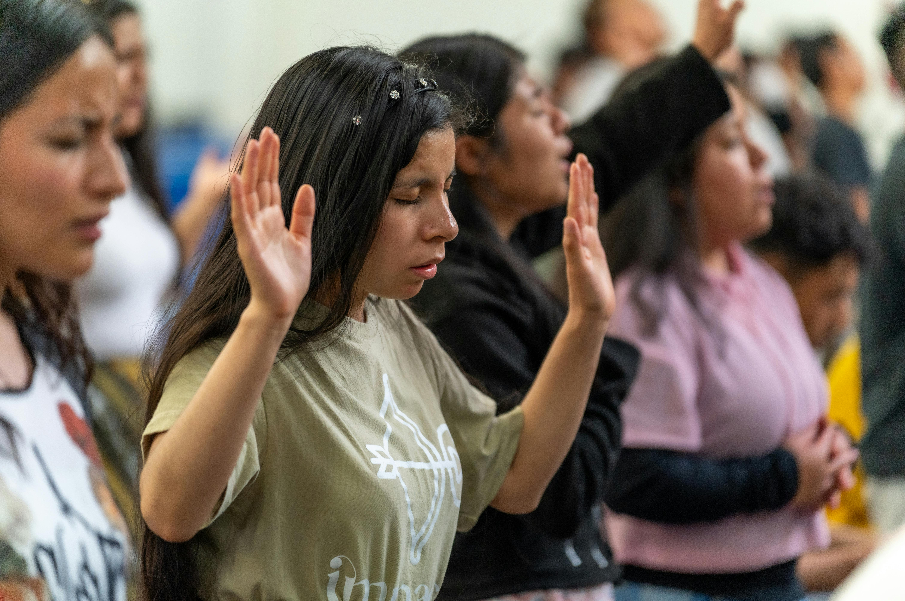
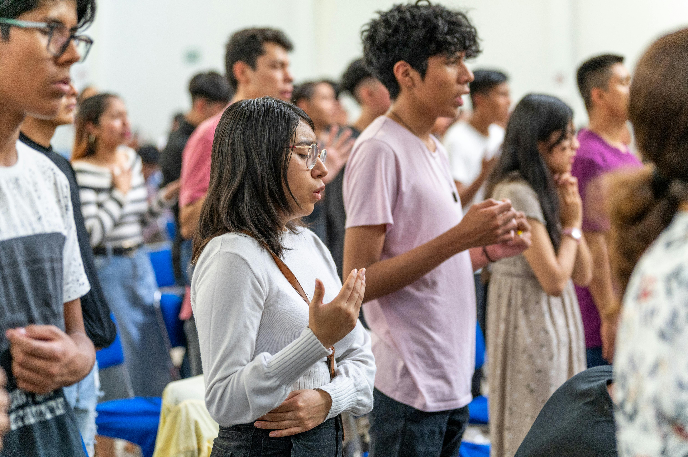

Ministerios
En Bethel Orotina creemos que cada área de la iglesia es una oportunidad para servir y crecer en comunidad. Nuestros ministerios buscan fortalecer la fe, los valores cristianos y la comunión con Dios, equipando a cada persona para vivir conforme a Su propósito.
Alabanza y Adoración
A través de la música y la adoración buscamos crear un ambiente donde la presencia de Dios se manifieste. Nuestro deseo es guiar a la congregación a una relación más profunda con el Señor, levantando manos y corazones en gratitud y entrega total.

Hombres
Este ministerio está enfocado en formar hombres conforme al corazón de Dios. Fomentamos el crecimiento espiritual, el liderazgo familiar y el compañerismo cristiano, animando a cada hombre a ser ejemplo de fe, integridad y servicio en su hogar y comunidad.

Mujeres
Un espacio diseñado para mujeres que buscan fortalecer su fe y propósito. A través de estudios bíblicos, tiempos de oración y compañerismo, animamos a cada mujer a vivir con identidad en Cristo, reflejando Su amor en cada área de su vida.

Jóvenes
Un ministerio vibrante donde los jóvenes pueden crecer en su relación con Dios, descubrir sus dones y aprender a impactar su entorno con fe y esperanza. Promovemos la unidad, el servicio y la pasión por Jesús como estilo de vida.
OFRENDAS
Doná por medio de sinpe móvil: +506 6479 4381